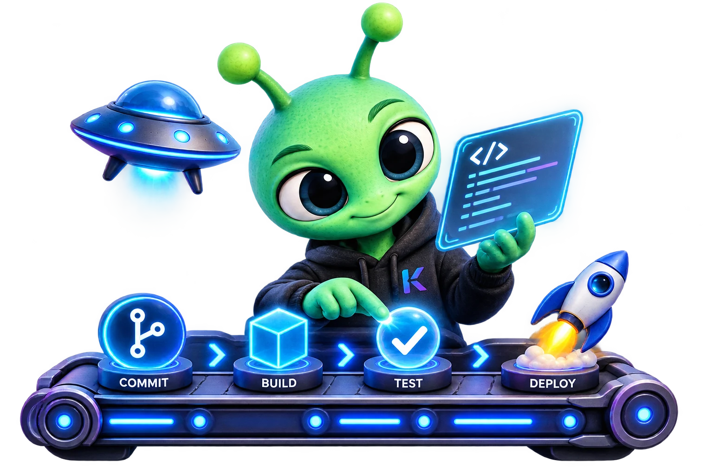

Zlorb is a tiny daemon that lives on your server, watches your git repos, fast-forwards them, builds, and restarts your app. No CI YAML. No SSH. No deploy day.
Installs with Cargo · runs as a systemd user service · free forever

You keep working the way you already do — commit, push. Zlorb handles everything that used to happen after.
Install the two binaries with Cargo and run zlorb-ctl setup. It writes the config and registers the daemon as a systemd user service.
Stand inside any git repo and run zlorb-ctl add. The running daemon picks it up immediately — no restart, no reload command.
One config entry per repo: the branch to follow, a build strategy — bun or rust — and an optional restart command. Edits apply live.
On its next cycle Zlorb sees the new commit, fast-forwards, builds, and restarts your app. You find out it worked because the site changed.
A deploy tool earns trust in the failure cases. Zlorb's defaults are built around not losing your work and never pretending a deploy happened when it didn't.
Add repos and edit config while the daemon runs. Watch list and settings changes take effect on the next cycle — restarting the watcher to watch something new is not a thing here.
When the remote advances, Zlorb fast-forwards the branch and updates the working tree — scoped to the paths that actually changed, so unrelated work in the repo is left alone.
If local changes or untracked files stand in the way of an update, Zlorb refuses and names the files. Your uncommitted work is never silently clobbered by a deploy.
A checkout that fails mid-update rolls the branch and the tree back — and Zlorb verifies the rollback landed before it trusts it. Partial states don't get left behind.
A build that fails is recorded against that commit and retried on later cycles until it succeeds — then the record clears. A red build is a pending deploy, not a lost one.
After a successful update and build, Zlorb runs your restart command in the repo directory. On cycles where nothing changed, it stays idle. Your start script stays yours.
Builds run through small modules behind one shared interface, selected by the strategy in each repo's config. New stacks get a new module — modeled on the existing ones, gated by a shared conformance test suite — instead of another flag on a monolith.
Runs install and your build command, judging both by exit status — a failed install fails the deploy, loudly.
Runs cargo build for the repo and surfaces the compiler's own output when it fails.
Need npm, Go, or something else? The manager template and contract docs walk through adding one — the daemon's update loop never changes.
Install Zlorb on the server, add your repos, and let git push do the rest.
Linux · Rust · MIT license